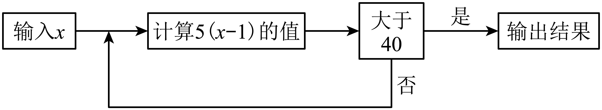
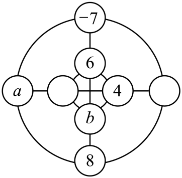
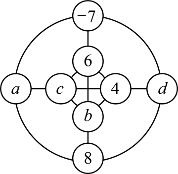
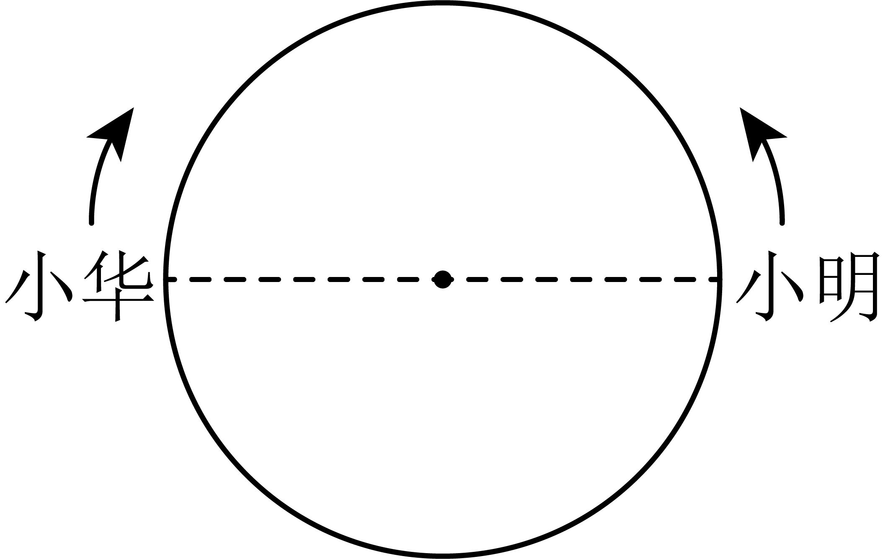
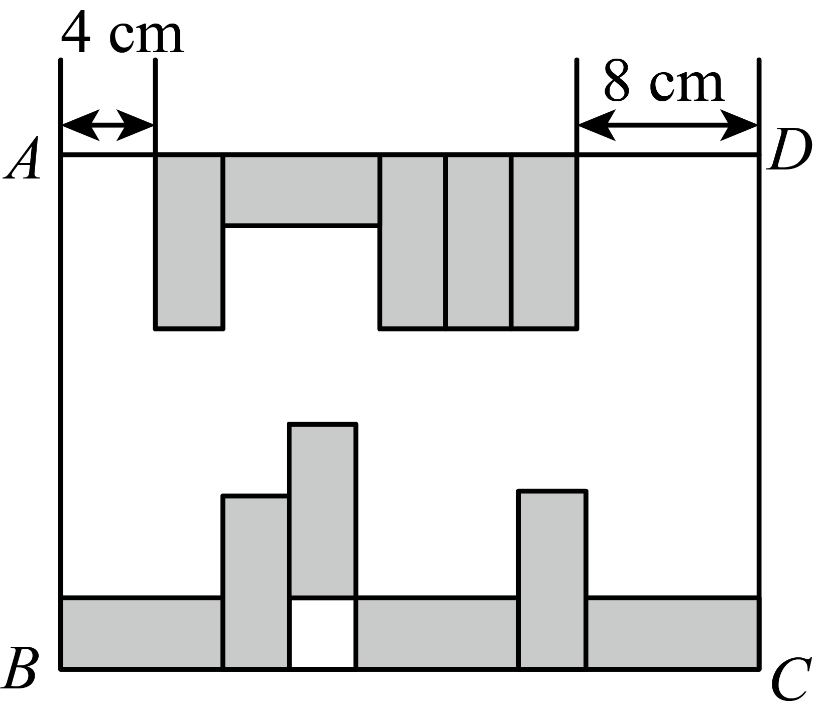
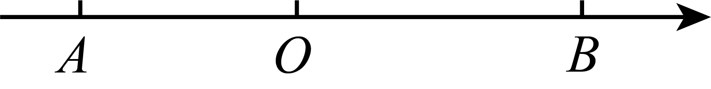

第五章 一元一次方程·拔尖卷
【北师大版2024】
参考答案与试题解析
第Ⅰ卷
一．选择题（共10小题，满分30分，每小题3分）
1．（3分）已知m−2x|m−1|−5=8是关于x的一元一次方程，则m=（ ）
A．0或2 B．1或−1 C．2 D．0
【答案】D
【分析】本题考查由一元一次方程定义求参数，涉及绝对值意义、解一元一次方程等知识，先由一元一次方程定义得到m−1=1，且m−2≠0，根据m−1=1得到m−1=1或m−1=−1，解一元一次方程即可得到答案，熟记一元一次方程定义及解法是解决问题的关键．
【详解】解：∵ m−2x|m−1|−5=8是关于x的一元一次方程，
∴m−1=1，且m−2≠0，
由m−1=1可得m−1=1或m−1=−1，
解得m=2或m=0，
∵ m−2≠0，
∴ m=0，
故选：D．
2．（3分）若3a−2b=5，则下列等式中不一定成立的是（ ）
A．3a−5=2b B．3a+1=2b+6 C．3ac=2bc+5 D．a=23b+53
【答案】C
【分析】本题主要考查了等式的性质，灵活运用等式的性质成为解题的关键．根据等式的性质逐项判断即可．
【详解】解：A．若3a−2b=5，则3a−5=2b，故A选项成立，不符合题意；
B．若3a−2b=5，则3a+1=2b+6，故B选项成立，不符合题意；
C．若3a−2b=5，则3ac=2bc+5c，故C选项不成立，符合题意；
D．若3a−2b=5，则a=23b+53，故D选项成立，不符合题意．
故选：C．
3．（3分）（24-25七年级上·重庆·阶段练习）按照下面的程序计算：当输入x为32时，输出结果为155；当输入x为11时，输出结果为245；若输入的x的值为正整数，输出结果为45，那么满足条件的x的值最多有（ ）

A．1个 B．2个 C．3个 D．4个
【答案】B
【分析】本题考查了程序框图与代数式求值，解一元一次方程；分情况考虑，45是一次输出的结果；45是两次运算输出的结果；45是三次运算输出的结果；分别利用一元一次方程求解即可．
【详解】解：若45是一次计算输出的结果，则5(x−1)=45，
解得：x=10；
若45是经过两次计算输出的结果，由上知，第一次输出的结果为10，第二次输出的结果为45，故5(x−1)=10，
解得：x=3；
若45是经过三次计算输出的结果，由上知，第二次输出的结果为3，第三次输出的结果为45，故5(x−1)=3，
解得：x=85；
由于输入的x的值为正整数，故满足条件的x的值最多有2个；
故选：B．
4．（3分）某同学在解方程2x−12=x+a2−1去分母时，方程右边的−1没有乘以2，因而求得方程的解为x=5，则a的值和方程的正确的解分别是多少？( )
A．a=5，x= 43 B．a=2，x=0 C．a=5，x=4 D．a=4，x=−5
【答案】C
【分析】本题考查了一元一次方程的解法及错解还原问题，解题的关键是根据“去分母时右边−1未乘2”的错误操作，先列出错误方程，再将错解代入求出a的值，最后代入原方程计算正确解．
先根据错误操作（去分母时右边−1不乘2）写出错误方程；将错解x=5代入错误方程，求出a的值；再把a的值代入原方程，按正确步骤（去分母、去括号、移项、合并同类项、系数化为1）求解，最后匹配选项．
【详解】解：由原方程去分母时右边−1未乘2，得2x−1=x+a−1．
∵错解x=5满足错误方程，
∴代入得2×5−1=5+a−1，
即10−1=4+a，解得a=5．
将a=5代入原方程:2x−12=x+52−1，
去分母得2x−1=x+5−2，
移项合并得2x−x=5−2+1，解得x=4．
综上，a=5，正确的解x=4，对应选项C．
故选：C．
5．（3分）（24-25七年级上·陕西西安·期末）若关于x的方程k−3x=6−2x+1的解为整数，则满足条件的所有整数k的和为（）．
A．10 B．-4 C．4 D．6
【答案】D
【分析】本题考查了一元一次方程的解，利用了整数的定义．根据方程的解x=4k−1是整数，可得k−1是4的因数，4的因数有±1,±2,±4，可得k的值，最后计算它们的和．
【详解】首先对方程进行化简：
(k−3)x=6−2(x+1)，
(k−3)x=6−2x−2，
(k−3)x+2x=4，
(k−3+2)x=4，
(k−1)x=4，
因为方程的解为整数，所以x=4k−1为整数，
那么k−1是4的因数，4的因数有±1,±2,±4，
当k−1=1时，k=2；
当k−1=−1时，k=0；
当k−1=2时，k=3，
当k−1=−2时，k=−1；
当k−1=4时，k=5；
满足条件的整数k=2,0,3，−1,5,−3，
2+0+3+(−1)+5+(−3)=6．
故选D．
6．（3分）（24-25七年级上·湖北·阶段练习）如图是由“幻方”游戏创新改成的“幻圆”游戏．现将−1，2，−3，4，−5，6，−7，8分别填入图中的小圆圈内，使图中横、竖两线上以及内、外两圆上的4个数字之和都相等，则图中a+b的值为（ ）

A．−6或−3 B．−8或1 C．−1或−4 D．1或−1
【答案】A
【分析】本题考查了一元一次方程．解决本题的关键是知道横竖两个圈的和都是2．由于八个数的和是4，所以需满足两个圈的和是2，横、竖的和也是2．列方程可得结论．
【详解】解：设小圈上的数为c，大圈上的数为d，
−1+2−3+4−5+6−7+8=4，
∵横、竖以及内外两圈上的4个数字之和都相等，
∴两个圈的和是2，横、竖的和也是2，

则−7+6+b+8=2，得b=−5，
6+4+b+c=2，得c=−3，
a+c+4+d=2，a+d=1，
∵当a=−1时，d=2，则a+b=−1−5=−6，
当a=2时，d=−1，则a+b=2−5=−3，
故选：A．
7．（3分）（24-25七年级上·广东广州·阶段练习）在一个圆形跑道上，小华与小明分别从一条直径的两端同时出发，相向而行，第一次相遇时，小华走了80米．相遇后，两人继续向前行走，在小明还差55米就走完一圈时，与小华再次相遇，这个圆形跑道的周长是（ ）米．

A．370 B．260 C．420 D．350
【答案】A
【分析】本题考查了一元一次方程的应用，找准等量关系，正确列出一元一次方程是解题的关键．
根据两次相遇两人的路程之和间的关系，可得出第二次相遇的时间是第一次相遇的时间的3倍，设这个圆形跑道的周长是x米，利用第二次相遇两人的路程之和为一个半圆形跑道的周长，可列出关于x的一元一次方程，解之即可得出结论．
【详解】解：∵第一次相遇，两人的路程之和为半个圆形跑道的周长，第二次相遇，两人的路程之和为一个半圆形跑道的周长，
∴第二次相遇的时间是第一次相遇的时间的3倍．
设这个圆形跑道的周长是x米，
根据题意得：80×3+x−55=32x，
解得：x=370，
∴这个圆形跑道的周长是370米．
故选：A．
8．（3分）（24-25七年级下·福建泉州·期中）定义：如果两个一元一次方程的解之和为1，我们就称这两个方程为“美好方程”．例如：方程2x−1=3和x+1=0为“美好方程”．若关于x的方程12025x+1=0与12025x−1=2x+k是“美好方程”，则关于y的方程12025y+2−1=2y+k+4的解为（ ）
A．y=2024 B．y=2025 C．y=2026 D．y=2027
【答案】A
【分析】本题考查解一元一次方程，熟练掌握新定义，是解题的关键：先求出12025x+1=0的解，根据新定义，得到12025x−1=2x+k的解，再利用换元法求出12025y+2−1=2y+k+4的解即可．
【详解】解：∵12025x+1=0，
∴x=−2025，
∵关于x的方程12025x+1=0与12025x−1=2x+k是“美好方程”，
∴方程12025x−1=2x+k的解为：x=1−−2025=2026，
∴关于y的方程12025y+2−1=2y+k+4即：12025y+2−1=2y+2+k的解为：y+2=2026，
∴y=2024；
故选A．
9．（3分）（24-25七年级上·天津·阶段练习）关于x的方程x3⋅a=x2−16x−6无解，则a的值是（ ）
A．1 B．−1 C．±1 D．a≠1
【答案】A
【分析】本题考查了解一元一次方程，以及知道一元一次方程的解求参数，熟练掌握以上知识点是解题的关键．先解得2x(a−1)6=1，根据方程无解，可知a−1=0，从而求得答案．
【详解】解：x3⋅a=x2−16x−6
x3⋅a=x2−16x+1
ax3−x2+x6=1
2ax−2x6=1
2x(a−1)6=1
∵关于x的方程无解
∴a−1=0
∴a=1
故选：A．
10．（3分）已知m，n为常数，关于x的方程3kx+m2=1+x−nk3，无论k为何值，它的解总是x=2，则mn的值为（ ）
A．−45 B．−30 C．−27 D．−18
【答案】B
【分析】本题主要考查了方程的解的定义、方程无数解的条件等知识点，正确得到m和n的值是解题的关键．
把x=2代入方程，由k可以取得任意值可得到关于m和n式子，进而求得m和n的值，进而求得代数式的值．
【详解】解：把x=2代入方程3kx+m2=1+x−nk3化简得：
化简，得18+2nk=10−3m，
由于k可以取任意值，则18+2n=010−3m=0，解得：n=−9m=103，
∴mn=103×−9=−30．
故选B．
二．填空题（共6小题，满分18分，每小题3分）
11．（3分）已知8m+3n+2=4m+7n，利用等式的性质比较m与n的大小关系：m n（填“>”“<”“=”）
【答案】<
【分析】本题考查了等式的性质，把等式变形为m减n等于多少的形式，从而可得结论．注意：两个数的差大于0，被减数大于减数；两个数的差等于0，被减数和减数相等；两个数的差小于0，被减数小于减数．
【详解】解：8m+3n+2=4m+7n
移项得：8m−4m−7n+3n=−2
合并同类项得：4m−4n=−2
提取公因数得：4m−n=−2
化简：m−n=−12
∵−12<0
∴m−n<0
∴m<n
故答案为：<．
12．（3分）已知关于x的方程ax=3x+b−2(a，b为常数）有无数个解，则a−b=
【答案】1
【分析】本题考查了解一元一次方程和一元一次方程的解，能得出一个关于a、b的一元一次方程是解此题的关键．先整理方程得出(a−3)x=b−2，根据已知得出a−3=0，b−2=0，求出a、b的值即可．
【详解】解：ax=3x+b−2，
ax−3x=b−2，
(a−3)x=b−2，
∵关于x的方程ax=3x+b−2(a，b为常数）有无数个解，
∴a−3=0，b−2=0，
解得：a=3，b=2，
∴a−b=1，
故答案为：1．
13．（3分）（24-25七年级上·陕西西安·阶段练习）若关于x的方程−x+2x−k=3x的解是方程x0.4−3=12x的解的2倍，则k= ．
【答案】−3
【分析】本题主要考查了解一元一次方程，一元一次方程的解的定义，先解方程x0.4−3=12x得到该方程的解，进而得到方程−x+2x−k=3x的解，再把方程−x+2x−k=3x的解代入方程中计算求解即可．
【详解】解：x0.4−3=12x
去分母得：5x−6=x，
解得x=32，
∵关于x的方程−x+2x−k=3x的解是方程x0.4−3=12x的解的2倍，
∴方程−x+2x−k=3x的解为x=3，
∴−3+23−k=3×3，
解得k=−3，
故答案为：−3．
14．（3分）（24-25七年级上·吉林松原·期中）小明在做解方程作业时，不小心将方程中的一个常数污染了看不清楚，被污染的方程是2y−12=y−▄，怎么办呢？小明想了想便翻看了书后的答案，此方程的解是y=−32他很快就补好了这个常数，这个常数应是 ．
【答案】2
【分析】本题主要考查了根据一元一次方程的解求参数，把y=−32代入方程，再解一元一次方程求解即可得出答案．
【详解】解：把y=−32代入2y−12=y−▄，
则2×−32−12=−32−▄，
解得：▄=2，
则常数为2，
故答案为：2
15．（3分）（24-25七年级下·江苏南通·期中）如图，在长方形ABCD中，放入11个形状、大小相同的小长方形，所标尺寸如图所示，已知每个小长方形的长比宽的4倍少1cm，则小长方形的长为 cm．

【答案】7
【分析】此题考查了一元一次方程的应用．设小长方形宽为xcm，则长为4x−1cm，根据长方形ABCD的长列方程，解方程得到x的值，即可求出小长方形的长和宽．
【详解】解：设小长方形宽为xcm，则长为4x−1cm，
根据题意得：4+8+4x−1+4x=34x−1+3x，
解得x=2，
则4×2−1=7cm，
故答案为：7．
16．（3分）（24-25七年级上·全国·期末）已知一艘船在静水中的速度为每小时26千米，船沿江从A港逆流行驶至B港用时，比从B港返回A港多用3个小时，已知水流的速度为每小时2千米，则A港到B港的距离是 千米．
【答案】504
【分析】本题考查一元一次方程的实际应用，解答本题的关键是明确题意，列出相应的方程．设A港和B港之间的距离为x千米，根据顺流比逆流少用3小时，列方程即可．
【详解】解：设A港和B港之间的距离为x千米，
由题意可得：x26+2+3=x26−2，
化简得x28+3=x24，
解得：x=504．
故A港和B港之间的距离为504千米．
故答案为：504．
第Ⅱ卷
三．解答题（共8小题，满分72分）
17．（6分）（24-25七年级上·陕西安康·阶段练习）解下列方程．
(1)x6−30−x4=5；
(2)3x0.5−1.4x0.4=5x−76．
【答案】(1)x=30
(2)x=−0.7
【分析】本题考查了解一元一次方程，步骤为:去分母，去括号，移项合并，把未知数系数化为1，求出解．
（1）方程去分母，去括号，移项合并，把x系数化为1即可求出解；
（2）方程整理后，去分母，去括号，移项合并，把x系数化为1即可求出解．
【详解】（1）解：x6−30−x4=5，
去分母，得2x−330−x=60，
去括号，得2x−90+3x=60，
移项、合并同类项，得5x=150，
系数化为1，得x=30；
（2）解：3x0.5−1.4x0.4=5x−76
原方程可化为6x−7x2=5x−76．
去分母，得36x−21x=5x−7．
移项、合并同类项，得10x=−7．
系数化为1，得x=−0.7．
18．（6分）（24-25七年级上·陕西咸阳·阶段练习）定义：如果两个一元一次方程的解之和为2，我们就称这两个方程为“成双方程”．例如：方程2x−1=2和2x−1=0为“成双方程”．
(1)请判断方程4x−(x+5)=1与方程−2y−y=3是否为“成双方程”；
(2)若关于x的方程x2+m=4与方程3x−2=2x+4互为“成双方程”，求m的值．
【答案】(1)方程4x−(x+5)=1与方程−2y−y=3不是互为“成双方程”
(2)m=6
【分析】本题考查了解一元一次方程和应用一元一次方程的根求参数的值，理解新定义是解题的关键．
（1）根据题意，分别解一元一次方程，根据“成双方程”的定义验证即可求解；
（2）分别解一元一次方程，根据“成双方程”的定义列出关于m的方程，解方程即可求解．
【详解】（1）解：方程4x−(x+5)=1与方程−2y−y=3不是互为“成双方程”，理由如下：
解4x−(x+5)=1，得x=2，
解−2y−y=3，得y=−1，
∵ x+y=2+(−1)=1≠2，
∴方程4x−(x+5)=1与方程−2y−y=3不是互为“成双方程”．
（2）解x2+m=4，得x=8−2m，
解3x−2=2x+4，得x=6，
∵关于x的方程x2+m=4与方程3x−2=2x+4互为“成双方程”，
∴ 8−2m+6=2，
∴ m=6．
19．（8分）（24-25七年级上·山西吕梁·阶段练习）山西某中学举行英语对话听力挑战赛，每位选手共挑战4轮，每轮4个题目，每轮结果呈现形式为m:n（其中答对m题，答错n题），每种不同的结果产生的积分也不相同．甲、乙、丙三位同学的挑战结果如下表：
第1轮 | 第2轮 | 第3轮 | 第4轮 | 总积分 | |
甲 | 3:1 | 2:2 | 3:1 | 2:2 | 8 |
乙 | 2:2 | 2:2 | 2:2 | 2:2 | 4 |
丙 | 1:3 | 2:2 | 1:3 | 3:1 | −2 |
(1)结果为2:2，积___________分；结果为3:1，积___________分．
(2)设1:3的结果积x分，请利用方程的知识，求x的值．
【答案】(1)1；3
(2)−3
【分析】本题考查了一元一次方程的应用，找出题中的等量关系是解本题的关键．根据题意列出方程，求出方程的解即可得到结果．
【详解】（1）解：设结果为2:2积a分，根据乙同学的总积分可得：
4a=4，解得a=1，
故结果为2:2积1分；
设结果为3:1积b分，根据甲同学的总积分可得：
2b+2=8，解得b=3，
故结果为3:1积3分；
故答案为：1；3．
（2）解：根据题意列方程为：2x+1+3=−2，
解得x=−3，
故x的值为−3．
20．（8分）（24-25七年级上·陕西宝鸡·期中）如图，数轴上A，B两点所对应的数分别是a，b，其中a＝−3+18÷−3×13，b＝−22−12×−6．

(1)求a，b的值；
(2)求A，B两点之间的距离；
(3)一动点C从点A出发，以每秒2个单位长度的速度沿数轴向右运动，另一动点D从点B出发，以每秒1个单位长度的速度沿数轴向左运动．若点C，点D同时出发，在数轴上点N处相遇，求点N对应的有理数．
【答案】(1)a=−5，b=7
(2)12
(3)3
【分析】本题考查了数轴上两点间的距离以及一元一次方程的应用等知识，熟练掌握数轴的性质是解题关键．
（1）运用有理数的运算法则进行计算即可求解；
（2）根据数轴的性质可得A，B两点间的距离等于点B表示的数减去点A表示的数，计算有理数的减法即可；
（3）设同时出发x秒后相遇，当C、D两点相遇时，运动的总路程为A，B两点之间的距离，据此建立方程，解方程得：4秒后C、D两点相遇，故BN=1×4=4，因为ON=OB−BN，据此即可求解．
【详解】（1）a=−3+18÷−3×13=−3+−6×13=−3+−2=−5，
b=−22−12×−6=4+3=7，
故a=−5，b=7；
（2）A，B两点之间的距离为7−−5=7+5=12；
（3）设同时出发x秒后相遇，得2x+x=12，
解得x=4，
故BN=1×4=4,
∵OB=7，
∴ON=OB−BN=7−4=3，
故点N对应的有理数是3．
21．（10分）（24-25七年级上·河北唐山·期末）为开展好校园足球活动，某些学校计划联合购买一批足球运动装备，经市场调查，甲，乙两商场分别以同样的价格出售同种品牌的足球队服和足球．已知每套队服比每个足球贵20元，购买一套队服和一个足球共需花费180元．
(1)求每套队服和每个足球的售价分别是多少？
(2)甲商场推出的优惠方案是：每购买10套队服，送一个足球；乙商场推出的优惠方案是：若购买队服超过90套，则队服原价，但购买足球打八折．若计划一共购买100套队服和m（m>10）个足球．
①请用含m的代数式分别表示出到甲商场和乙商场购买装备所花的费用；
②若学校的预算是12000元，选择在哪家商场购买的足球更多？
③请你说明m为何值时 ，两家商场费用相同？
【答案】(1)每个足球的售价80元，每套队服的售价是100元；
(2)①甲商场买装备所花的费用为(80m+9200) 元； 乙商场买装备所花的费用为64m+10000元；②选择在甲商场购买的足球更多；③当m=50时，选择甲、乙两商场所花那费用相同；当m>50时，选择乙商场购买比较合算；当10<m<50时，选择甲商场购买比较合算．
【分析】（1）设每个足球的售价x元，则每套队服的售价是x+20元，根据题意列得方程，解得x的值再代入x+20中计算即可；
（2）①根据题意分别用含m的代数式表示出到甲商场和乙商场购买装备所花的费用即可；
②结合①中所求列得方程，解得m的值后进行比较即可；
③结合①中所求分情况讨论即可；
本题考查了列代数式，一元一次方程的应用，掌握知识点的应用是解题的关键．
【详解】（1）解：设每个足球的售价x元，则每套队服的售价是x+20元，
由题意得：x+x+20=180，
解得：x=80，
则x+20=80+20=100，
答：每个足球的售价80元，每套队服的售价是100元；
（2）解：① 100×100+80m−10=80m+9200（元），
即甲商场买装备所花的费用为80m+9200元；
100×100+0.8×80m=64m+10000（元），
即乙商场买装备所花的费用为64m+10000元；
②当80m+9200=12000，
解得：m=35；
当64m+10000=12000，
解得：m=31.25，
∴则选择在甲商场购买的足球更多；
③ 80m+9200=64m+1000，
解得：m=50，
即当m=50时，选择甲、乙两商场所花费用相同；
80m+9200>64m+10000，
解得：m>50，
当m>50时，选择乙商场购买比较合算；
80m+9200<64m+10000，
解得：m<50，
当10<m<50时，选择甲商场购买比较合算．
22．（10分）（24-25七年级上·黑龙江哈尔滨·期末）【阅读理解】使方程左、右两边的值相等的未知数的值，叫作方程的解．如x=6是方程3x=18的解．已知方程3a−1=18，若把a−1看作一个整体，则a−1=6；已知方程3b+2=18，若把3b+2看作一个整体，则3b+2=6．
【尝试运用】
（1）已知方程34m+5=18，则4m+5的值为 ；
（2）已知方程3n−72024=18，则n−72024的值为 ；
【拓展创新】
（3）已知关于x的一元一次方程12024x+3=2x+b的解为x=2，求一元一次方程y+3+6072=4048y+3+2024b的解．
【答案】（1）6；（2）6；（3）y=−1
【分析】本题主要考查了一元一次方程的应用，将原方程进行正确的变形是解题的关键，
（1）将方程两边同除以3即可求得答案；
（2）将方程两边同除以3即可求得答案；
（3）将程y+3+6072=4048y+3+2024b两边同除以2024可得12024y+3+3=2y+3+b，再根据题意可得y+3=2，解得y的值即可．
【详解】（1）解：∵方程34m+5=18
∴4m+5=18÷3=6，
故答案为：6；
（2）解：∵方程3n−72024=18，
∴n−72024=18÷3=6，
故答案为：6；
（3）解：已知关于y的一元一次方程y+3+6072=4048y+3+2024b，
两边同除以2024变形得：12024y+3+3=2y+3+b，
∵关于x的一元一次方程12024x+3=2x+b的解为x=2，
∴y+3=2，解得：y=−1，
∴关于y的一元一次方程(y+3)+6072=4048y+3+2024b的解为y=−1．
23．（12分）如图是2023年11月的月历，“T”型、“田”型两个阴影图形分别覆盖其中四个方格（可以重叠覆盖），设“T”型阴影覆盖的最小数字为a，四个数字之和为S1，“田”型阴影覆盖的最小数字为b，四个数字之和为S2．

(1)S1的值能否为103？若能，求a的值；若不能，说明理由；
(2)S1+S2值能否为55，若能，求a，b的值；若不能，说明理由；
(3)若S1−S2=−13，求S1+S2的最大值．
【答案】(1)S1的值不能为103，理由见解析
(2)S1+S2值能为55，此时a=3，b=4或a=4，b=3
(3)195
【分析】本题考查一元一次方程的应用，
（1）设“T”型阴影覆盖的最小数字为a，则其他的数字分别是a+1、a+2、a+8，根据S1的值为103列出方程求得a的值，结合a的实际意义进行判断；
（2）根据题意，将其他数字利用a、b表示出来，然后由“S1+S2=55”列出方程并解方程；
（3）根据“S1−S2=−13”得出a=b−2，结合实际意义确定b的最大值，进而求出S1+S2的最大值；
解题的关键是寻找题目中隐含的规律．
【详解】（1）解：S1的值不能为103，
理由：设“T”型阴影覆盖的最小数字为a，则其他的数字分别是a+1、a+2、a+8，
根据题意，得：a+a+1+a+2+a+8=103，
解得：a=23，
∵a+8=23+8=31>30，
∴a=23不符合题意，
即S1的值不能为103；
（2）设“T”型阴影覆盖的最小数字为a，四个数字之和为S1，“田”型阴影覆盖的最小数字为b，四个数字之和为S2，
根据题意，得：a+a+1+a+2+a+8+b+b+1+b+7+b+8=55，
整理，得：a+b=7，
∵a、b都是正整数，
由日历表可知：a=3，b=4或a=4，b=3，
即S1+S2值能为55，此时a=3，b=4或a=4，b=3；
（3）设“T”型阴影覆盖的最小数字为a，四个数字之和为S1，“田”型阴影覆盖的最小数字为b，四个数字之和为S2，
∴S1=a+a+1+a+2+a+8=4a+11，
S2=b+b+1+b+7+b+8=4b+16，
根据题意，得：4a+11−4b+16=−13，
整理，得：a=b−2，
∴S1+S2=4a+11+4b+16=4b−2+4b+27=8b+19，
∵a、b都是正整数，
由日历表可知：b的最大值为22，此时a=22−2=20，
此时S1+S2取得最大值，最大值为：8×22+19=195，
∴S1+S2的最大值为195．
故答案为：195．
24．（12分）（24-25六年级下·上海黄浦·期中）某商场进了20台A、B、C三种型号的冰箱，根据下表提供的信息，解答以下问题：
冰箱类型 | A | B | C |
购进的台数（台） | 8 | 6 | |
每台冰箱的销售价（元） | 2000 | 3000 |
(1)商场购进A型号冰箱______________台；
(2)每台A型号冰箱的销售价比每台C型号冰箱的销售价便宜20%．
①每台C型号冰箱的销售价是_______________元；
②如果每台A、B两种型号冰箱的成本价之比是2:3，每台C型号冰箱的成本价比每台B型号冰箱的成本价少500元，且每台C型号冰箱的成本价比每台A型号冰箱的成本价多300元，则每台C型号冰箱的成本价是多少元？每台C型号冰箱的盈利率是多少？（百分号前保留一位小数）
③如果要使A、B两种型号冰箱的总利润达到6000元，那么需要销售A种型号冰箱______________台．
【答案】(1)6
(2)①2500；②1900元，31.6%；③3或6
【分析】本题考查了一元一次方程的应用，百分数应用题，比的应用，假设法解题，读懂题意找准等量关系列出方程是解题的关键．
（1）用总数减去B、C两种型号的冰箱的数量，即可得解；
（2）①设C型冰箱销售价为x元，根据每台A型号冰箱的销售价比每台C型号冰箱的销售价便宜20%，列方程求解即可；②设A、B两种型号冰箱的成本价分别为2y元、3y元，则C型号冷冻箱的成本价为3y−500元，根据题意，列方程求解即可，再用C的售价减去成本再除以成本得到盈利率；③先由②得到每台A、B型号冰箱的成本价，分别假设A种型号冰箱售出1台，2台，3台，4台，5台，6台，得出答案．
【详解】（1）解：A型号冰箱购买了20−8−6=6（台）；
故答案为：6．
（2）解：①设C型冰箱销售价为x元，
根据题意得，x1−20%=2000
解得x=2500，
故答案为：2500；
②设A、B两种型号冰箱的成本价分别为2y元、3y元，则C型号冷冻箱的成本价为3y−500元，
根据题意得，3y−500−300=2y，
解得y=800，
∴3y−500=3×800−500=1900（元），
每台C型号冰箱的盈利率为：2500−19001900×100%≈31.6%，
答：每台C型号冰箱的成本价是1900元，每台C型号冰箱的盈利率是31.6%．
③由②可知，A型号冰箱的成本价为2y=2×800=1600（元），
一台A型号冰箱的利润为2000−1600=400（元），
B型号冰箱的成本价为3y=3×800=2400（元），
一台B型号冰箱的利润为3000−2400=600（元），
假设A种型号冰箱售出1台，那么A种型号的利润达到400×1=400元，
那么需要销售B种型号(6000−400)÷600=283（台），不符合题意；
假设A种型号冰箱售出2台，那么A种型号的利润达到400×2=800元，
那么需要销售B种型号(6000−800)÷600=263（台），不符合题意；
假设A种型号冰箱售出3台，那么A种型号的利润达到400×3=1200元，
那么需要销售B种型号(6000−1200)÷600=8（台），符合题意；
假设A种型号冰箱售出4台，那么A种型号的利润达到400×4=1600元，
那么需要销售B种型号(6000−1600)÷600=223（台），不符合题意；
假设A种型号冰箱售出5台，那么A种型号的利润达到400×5=2000元，
那么需要销售B种型号(6000−2000)÷600=203（台），不符合题意；
假设A种型号冰箱全部售出，那么A种型号的利润达到400×6=2400元，
那么需要销售B种型号(6000−2400)÷600=6（台），符合题意；
综上，要使A、B两种型号冰箱的总利润达到6000元，需要销售A种型号冰箱3台或6台；
故答案为：3或6．